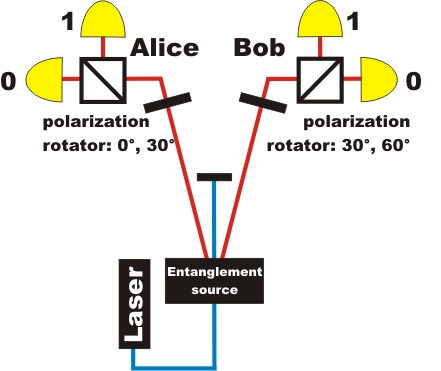
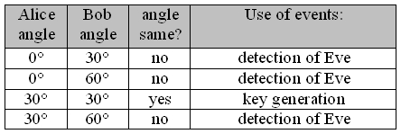
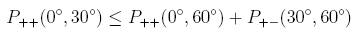
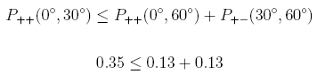
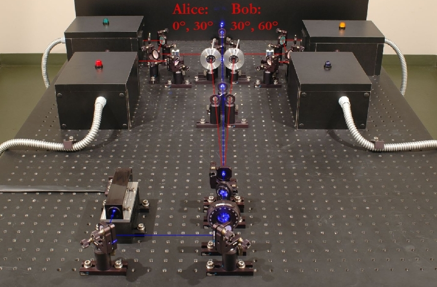

Quantum Cryptography Chapter 5:
Quantum cryptography with entangled photons
In the past chapters on quantum cryptography, the BB84 Protocol with single photons has been discussed extensively. On this page, we deal with quantum cryptography systems with entangled photons. The idea of quantum cryptography with entangled photons has been published by the scientist Ekert [Eke91] in 1991, and is known as the Ekert Protocol. The Ekert Protocol with entangled photons and the BB84 Protocol with single photons both use the cryptographic method One-Time-Pad. Both protocols only differ in the generation of the key code. For this page, the knowledge gained from the experiments on entanglement is a prerequisite.
Entanglement quantum cryptography: The process of key code generation
For the entanglement protocol, three parties are required. One sender of entangled photon pairs and two receivers (Alice and Bob) for measuring the two photons. The experimental setup for entanglement quantum cryptography (pic. 1, pic. 2) is exactly the same as for the experiments to prove entanglement. The features of entangled photon pairs and the experimental setup are described in detail in the section entanglement. Alice and Bob have a polarization rotator and a polarizing beam splitter cube (pic. 1) in their receiver unit. For the entanglement quantum cryptography system, Alice's polarization rotator can only be set to the two angles 0° and 30°. At Bob's polarization rotator, only the two angles 30° and 60° can be set.

pic. 1: Quantum cryptography with entangled photons
Alice and Bob set the two angles at their respective polarization rotator randomly and independently of each other. There are in total four possible combinations (pic. 1). If the angles of Alice and Bob match, both photons behave exactly alike at the beam splitter: Both photons are either transmitted (binary 1) or reflected (binary 0). Whether the two photons are transmitted or reflected is purely random (quantum random). This random behaviour can be studied directly at the experiment in the sections entanglement under the header basics. The key code can only be generated with one of the four angle combinations. The other three angle combinations are used to detect any possible spy.

table 1: Setting the polarization rotator and application
Entanglement quantum cryptography: Attack by spies
A spy could manipulate the exchange of the key code and thus skim the key code without anybody noticing. In order to do so, the spy must supplant the source for entangled photon pairs by his or her own source with unentangled photon pairs. With unentangled photon pairs, the sender knows the respective polarization of the photon pairs and may vary it. To trick Alice and Bob into believing that entangled photons are involved, the spy varies the sent photons randomly between the angles 30° for the binary 1 and -60° for the binary 0. Alice and Bob have no facilities, at an identical angle setting of 30° respectively, to notice the difference between entangled and unentangled photon pairs. The generation of entangled and unentangled photon pairs is discussed in detail in the section entanglement under the header generation.
Obviously, Alice and Bob must have an opportunity to detect the manipulation of the spy at the source. A clear indicator for entangled photons is the violation of the Bell-inequality. Entangled photons invariably violate the Bell-inequality. Unentangled photon pairs do not. Alice and Bob therefore have an unambiguous criterion to blow a spy's cover. The entanglement can be checked with various versions of the Bell-inequality (CHSH, Wigner, Hardy). For the following example, the version of Wigner [Wig70] is chosen. The equality is explained in the section entanglement under the header non-locality. As soon as the following Wigner-inequality is violated, Alice and Bob are assured that a spy has not manipulated the photons at the source.
The angles chosen for the Wigner-inequality depend on the entanglement state of the photon pair source. Our photon pair source (type 1-source) emits the Bell-state Φ+. Alice and Bob get the data for calculating the Wigner-inequality from the randomly selected different angle settings of the polarization rotators (table 1). If the measuring angles differ, these data are used after transmission for calculating the Wigner-inequality. Identical measuring angles are used for key code generation. All data recorded are embraced in the entanglement protocol.
Entanglement quantum cryptography: An experiment
The set-up for the real experiment on entanglement quantum cryptography is shown in picture 2. The polarization rotators on Alice's and Bob's side each have fixed angle settings: 0° and 30° for Alice, 30° and 60° for Bob.
In all systems for quantum cryptography, the laser has to send single pulses. After each pulse of the laser, a photon pair may have been generated. Therefore, after each pulse, the setting of the polarization rotators must be randomly changed. For our entanglement experiment, we require a 405nm laser with a long coherence length (single longitudinal and transversal mode diode laser). This special laser can only work continuously - a pulse mode is not available. In continuous mode, the entangled photon pairs are generated at any given time during the process, which means that the polarization rotator cannot be set individually for every possible photon. A pulsable laser specially for the type-1 entanglement quantum cryptography is very expensive and quite outside our budget.
The Wigner-inequality can also be disproved without a pulsable laser. With our continuous laser and the fixed angle setting of the polarization rotator, a clear violation of the Wigner-inequality is apparent, which means we have entangled photons and there is no spy present.

As opposed to our entanglement experiment with the continuous laser, the experiment on quantum cryptography with single photons (BB84-Protokoll) is carried out with a pulsed laser. In this experiment, unentangled single photon pairs are initially generated in a crystal (see under photon source for quantum cryptography). One of the two photons is used for triggering, the other photon is used for the quantum cryptography system. For the generation of unentangled photon pairs, the 405nm laser does not require any coherence length and can be controlled in pulse mode. The individual pulses of the pulsed laser have a length of 100ps. The laser can send single pulse at the push of a button, or at a rate of up to 80MHz. After each single laser pulse, the settings of the polarization rotators are varied at random.

pic. 2: Set-up for an entanglement quantum cryptography system
Entanglement quantum cryptography: From the beginnings to today's research
The first theoretical suggestion to employ entangled photons for quantum cryptography was published in 1991 by the scientist Ekert [Eke91]. Leadoff quantum cryptography systems with entangled photons were built in the year 2000 [Jen00-1]. That system was working at a data rate of 800 Bit/s, with Alice and Bob 360m apart in a laboratory. In 2004, the quantum cryptography system with entangled photons was tested in everyday life conditions for the first time [Pop04]. The key code transmission in this experiment took place via a 1.45 km glass-fibre cable between a bank and the city hall in Vienna. In 2007, a key code transmission with entangled photons was successfully carried out between the islands of La Palma and Teneriffe, over a distance of 144km [Urs07].
In 2005 a proposal was published to integrate the entanglement source directly in satellites [Pfe05]. Thus Alice and Bob could receive and measure the entangled photons on earth using telescopes. This theoretical proposal is to be carried out experimentally over the coming years.Instead of entangling photon pairs for quantum cryptography by polarization, they can also be entangled by the phase φ [Fra89], [Eke92]. Another alternative is entanglement cryptography through energy-time entanglement [Bren99], [Mar04].
Author: P. Bronner, August 2008
Translation: G. Murphy